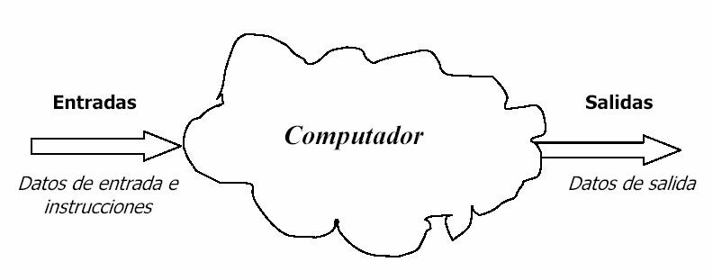
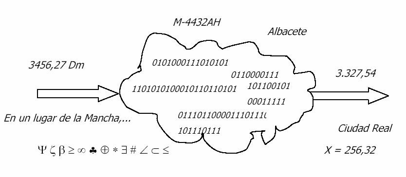

Ciencia que estudia el tratamiento de la información por medio de máquinas automáticas.
-Conjunto de conocimientos científicos y técnicas que hacen posible el tratamiento automático de la información por medio de ordenadores.
-Campo de conocimiento que abarca todos los aspectos de diseño y uso de ordenadores
Ordenador
Máquina capaz de aceptar unos datos de entrada, efectuar con ellos operaciones lógicas y aritméticas, y proporcionar los datos resultantes a través de un medio de salida; todo ello sin la intervención de un operador humano y bajo el control de un programa de instrucciones previamente almacenado en el ordenador.
vs. Calculadora
Máquina capaz de efectuar operaciones aritméticas bajo el control directo del usuario:
-No realiza operaciones de tipo lógico
-No enlaza automáticamente las operaciones que realiza
Ejemplos de operaciones aritméticas y lógicas
- Operaciones aritméticas:
sumar, restar, multiplicar, dividir...
- Operaciones lógicas:
comparaciones, operaciones del Álgebra de Boole...
Hardware y software
HARDWARE [Soporte físico]
La máquina en sí; es decir, el conjunto de circuitos electrónicos, cables, dispositivos electromecánicos y otros elementos físicos que forman los ordenadores.
SOFTWARE [Soporte lógico]
Conjunto de programas ejecutables por el ordenador.
El término hardware no se utiliza únicamente para designar los dispositivos físicos del ordenador, sino también todo lo relacionado con ellos.
Lo mismo puede decirse del software: no trata sólo de los programas de ordenador, sino de todas las materias relacionadas con la construcción y uso de los programas (organización y estructuración de los datos, análisis de aplicaciones, metodologías de diseño, etc.).
Un ordenador necesita ambos soportes, tan imprescindible es el hardware como el software. Aunque son muy distintos y sus disciplinas relacionadas son diferentes, hardware y software son complementarios ya que el ordenador necesita de ambos para su funcionamiento.
El ordenador como sistema
“Caja negra” cuyas salidas dependen de las entradas.

Teniendo en cuenta las instrucciones del programa almacenado en el ordenador:
Datos de salida = f (Datos de entrada, Instrucciones)
Dato
Representación formal de hechos, conceptos o instrucciones adecuada para su comunicación, interpretación y procesamiento por seres humanos o medios automáticos.
Ejemplos: 25ºC, 25m, 1234-BCD, 4/10/2004...
En el interior del ordenador, todo se representa con ceros y unos.

En el interior del ordenador, todo se representa con ceros y unos.
Información
El significado que un ser humano le asigna a los datos.